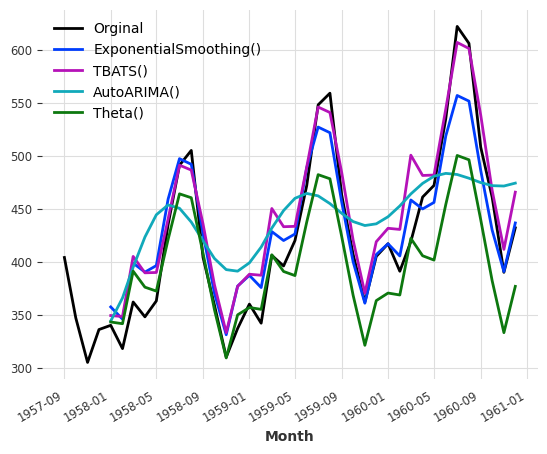

import pandas as pd
import numpy as np
import matplotlib.pyplot as plt
import numpy.testing as testing
from darts import TimeSeries
from darts.datasets import AirPassengersDatasetDarts
series = AirPassengersDataset().load()
series.plot()series1, series2 = series.split_before(0.75)
series1.plot()
series2.plot()series1, series2 = series[:-36], series[-36:]
series1.plot()
series2.plot()series_noise = TimeSeries.from_times_and_values(
series.time_index, np.random.randn(len(series))
)
(series / 2 + 20 * series_noise - 10).plot()(series / 50).stack(series_noise).plot()series.map(np.log).plot()series.map(lambda ts, x: x / ts.days_in_month).plot()(series / 20).add_datetime_attribute("month").plot()(series / 200).add_holidays("US").plot()series.diff().plot()from darts.utils.missing_values import fill_missing_valuesvalues = np.arange(50, step=0.5)
values[10:30] = np.nan
values[60:95] = np.nan
series_ = TimeSeries.from_values(values)
(series_ - 10).plot(label="with missing values (shifted below)")
fill_missing_values(series_).plot(label="without missing values")train, val = series.split_before(pd.Timestamp("19580101"))
train.plot(label="training")
val.plot(label="validation")Training forecasting models and making predictions
from darts.models import NaiveSeasonal/home/thekkel/mambaforge/envs/cfast/lib/python3.11/site-packages/neptune/internal/backends/hosted_client.py:51: NeptuneDeprecationWarning: The 'neptune-client' package has been deprecated and will be removed in the future. Install the 'neptune' package instead. For more, see https://docs.neptune.ai/setup/upgrading/
from neptune.version import version as neptune_client_version
/home/thekkel/mambaforge/envs/cfast/lib/python3.11/site-packages/pytorch_lightning/loggers/neptune.py:51: NeptuneDeprecationWarning: You're importing the Neptune client library via the deprecated `neptune.new` module, which will be removed in a future release. Import directly from `neptune` instead.
import neptune.new as neptunenaive_model = NaiveSeasonal(K=1)
naive_model.fit(train)
naive_forecast = naive_model.predict(36)
series.plot(label="actual")
naive_forecast.plot(label="naive forecast (K=1)")Inspect Seasonality
from darts.utils.statistics import plot_acf, check_seasonalityplot_acf(train, m=12, alpha=0.05)for m in range(2, 25):
is_seasonal, period = check_seasonality(train, m=m, alpha=0.05)
if is_seasonal:
print("There is seasonality of order {}.".format(period))There is seasonality of order 12.seasonal_model = NaiveSeasonal(K=12)
seasonal_model.fit(train)
seasonal_forecast = seasonal_model.predict(36)
series.plot(label="actual")
seasonal_forecast.plot(label="naive forecast (K=12)")from darts.models import NaiveDriftdrift_model = NaiveDrift()
drift_model.fit(train)
drift_forecast = drift_model.predict(36)
combined_forecast = drift_forecast + seasonal_forecast - train.last_value()
series.plot()
combined_forecast.plot(label="combined")
drift_forecast.plot(label="drift")from darts.metrics import mapeprint(
"Mean absolute percentage error for the combined naive drift + seasonal: {:.2f}%.".format(
mape(series, combined_forecast)
)
)Mean absolute percentage error for the combined naive drift + seasonal: 5.66%.from darts.models import ExponentialSmoothing, TBATS, AutoARIMA, Thetadef eval_model(model):
model.fit(train)
forecast = model.predict(len(val))
print("model {} obtains MAPE: {:.2f}%".format(model, mape(val, forecast)))
forecast.plot(label = str(model))
series[-40:].plot(label="Orginal")
eval_model(ExponentialSmoothing())
eval_model(TBATS())
eval_model(AutoARIMA())
eval_model(Theta())model ExponentialSmoothing() obtains MAPE: 5.11%
model TBATS() obtains MAPE: 5.87%
model AutoARIMA() obtains MAPE: 11.65%
model Theta() obtains MAPE: 8.15%
Searching for hyper-parameters with the Theta method¶
# Search for the best theta parameter, by trying 50 different values
thetas = 2 - np.linspace(-10, 10, 50)
best_mape = float("inf")
best_theta = 0
for theta in thetas:
model = Theta(theta)
model.fit(train)
pred_theta = model.predict(len(val))
res = mape(val, pred_theta)
if res < best_mape:
best_mape = res
best_theta = thetabest_theta_model = Theta(best_theta)
best_theta_model.fit(train)
pred_best_theta = best_theta_model.predict(len(val))
print(
"The MAPE is: {:.2f}, with theta = {}.".format(
mape(val, pred_best_theta), best_theta
)
)The MAPE is: 4.40, with theta = -3.5102040816326543.train.plot(label="train")
val.plot(label="true")
pred_best_theta.plot(label="prediction")
Backtesting: simulate historical forecasting
historical_fcast_theta = best_theta_model.historical_forecasts(
series, start=0.6, forecast_horizon=3, verbose=True
)
series.plot(label="data")
historical_fcast_theta.plot(label="backtest 3-months ahead forecast (Theta)")
print("MAPE = {:.2f}%".format(mape(historical_fcast_theta, series)))MAPE = 7.70%
best_theta_model = Theta(best_theta)
raw_errors = best_theta_model.backtest(
series, start=0.6, forecast_horizon=3, metric=mape, reduction=None, verbose=True
)
from darts.utils.statistics import plot_hist
plot_hist(
raw_errors,
bins=np.arange(0, max(raw_errors), 1),
title="Individual backtest error scores (histogram)",
)average_error = best_theta_model.backtest(
series,
start=0.6,
forecast_horizon=3,
metric=mape,
reduction=np.mean, # this is actually the default
verbose=True,
)
print("Average error (MAPE) over all historical forecasts: %.2f" % average_error)Average error (MAPE) over all historical forecasts: 6.36from darts.utils.statistics import plot_residuals_analysisplot_residuals_analysis(best_theta_model.residuals(series))model_es = ExponentialSmoothing(seasonal_periods=12)
historical_fcast_es = model_es.historical_forecasts(
series, start=0.6, forecast_horizon=3, verbose=True
)
series.plot(label="data")
historical_fcast_es.plot(label="backtest 3-months ahead forecast (Exp. Smoothing)")
print("MAPE = {:.2f}%".format(mape(historical_fcast_es, series)))MAPE = 4.45%plot_residuals_analysis(model_es.residuals(series))Machine learning and global models
RegressionModel can wrap around any sklearn-compatible regression model to produce forecasts (it has its own section below).
RNNModel is a flexible RNN implementation, which can be used like DeepAR.
NBEATSModel implements the N-BEATS model.
TFTModel implements the Temporal Fusion Transformer model.
TCNModel implements temporal convolutional networks.
from darts.datasets import AirPassengersDataset, MonthlyMilkDatasetseries_air = AirPassengersDataset().load().astype(np.float32)
series_milk = MonthlyMilkDataset().load().astype(np.float32)
# set aside last 36 months of each series as validation set:
train_air, val_air = series_air[:-36], series_air[-36:]
train_milk, val_milk = series_milk[:-36], series_milk[-36:]
train_air.plot()
val_air.plot()
train_milk.plot()
val_milk.plot()from darts.dataprocessing.transformers import Scalerscaler = Scaler()
train_air_scaled, train_milk_scaled = scaler.fit_transform([train_air, train_milk])
train_air_scaled.plot()
train_milk_scaled.plot()Using deep learning: example with N-BEATS
from darts.models import NBEATSModelmodel = NBEATSModel(input_chunk_length=24, output_chunk_length=12, random_state=42)
model.fit([train_air_scaled, train_milk_scaled], epochs=50, verbose=True);GPU available: True (cuda), used: True
TPU available: False, using: 0 TPU cores
IPU available: False, using: 0 IPUs
HPU available: False, using: 0 HPUs
You are using a CUDA device ('NVIDIA GeForce RTX 3060') that has Tensor Cores. To properly utilize them, you should set `torch.set_float32_matmul_precision('medium' | 'high')` which will trade-off precision for performance. For more details, read https://pytorch.org/docs/stable/generated/torch.set_float32_matmul_precision.html#torch.set_float32_matmul_precision
LOCAL_RANK: 0 - CUDA_VISIBLE_DEVICES: [0]
| Name | Type | Params
---------------------------------------------------
0 | criterion | MSELoss | 0
1 | train_metrics | MetricCollection | 0
2 | val_metrics | MetricCollection | 0
3 | stacks | ModuleList | 6.2 M
---------------------------------------------------
6.2 M Trainable params
1.4 K Non-trainable params
6.2 M Total params
24.787 Total estimated model params size (MB)`Trainer.fit` stopped: `max_epochs=50` reached.pred_air = model.predict(series=train_air_scaled, n=36)
pred_milk = model.predict(series=train_milk_scaled, n=36)
# scale back:
pred_air, pred_milk = scaler.inverse_transform([pred_air, pred_milk])
plt.figure(figsize=(10, 6))
series_air.plot(label="actual (air)")
series_milk.plot(label="actual (milk)")
pred_air.plot(label="forecast (air)")
pred_milk.plot(label="forecast (milk)")GPU available: True (cuda), used: True
TPU available: False, using: 0 TPU cores
IPU available: False, using: 0 IPUs
HPU available: False, using: 0 HPUs
LOCAL_RANK: 0 - CUDA_VISIBLE_DEVICES: [0]GPU available: True (cuda), used: True
TPU available: False, using: 0 TPU cores
IPU available: False, using: 0 IPUs
HPU available: False, using: 0 HPUs
LOCAL_RANK: 0 - CUDA_VISIBLE_DEVICES: [0]Covariates: using external data
past_covariates are series not necessarily known ahead of the forecast time. Those can for instance represent things that have to be measured and are not known upfront. Models do not use the future values of past_covariates when making forecasts.
future_covariates are series which are known in advance, up to the forecast horizon. This can represent things such as calendar information, holidays, weather forecasts, etc. Models that accept future_covariates will look at the future values (up to the forecast horizon) when making forecasts.
from darts import concatenate
from darts.utils.timeseries_generation import datetime_attribute_timeseries as dt_attrair_covs = concatenate(
[
dt_attr(series_air.time_index, "month", dtype=np.float32) / 12,
(dt_attr(series_air.time_index, "year", dtype=np.float32) - 1948) / 12,
],
axis="component",
)
milk_covs = concatenate(
[
dt_attr(series_milk.time_index, "month", dtype=np.float32) / 12,
(dt_attr(series_milk.time_index, "year", dtype=np.float32) - 1962) / 13,
],
axis="component",
)
air_covs.plot()
plt.title(
"one multivariate time series of 2 dimensions, containing covariates for the air series:"
);model = NBEATSModel(input_chunk_length=24, output_chunk_length=12, random_state=42)
model.fit(
[train_air_scaled, train_milk_scaled],
past_covariates=[air_covs, milk_covs],
epochs=50,
verbose=True,
);GPU available: True (cuda), used: True
TPU available: False, using: 0 TPU cores
IPU available: False, using: 0 IPUs
HPU available: False, using: 0 HPUs
LOCAL_RANK: 0 - CUDA_VISIBLE_DEVICES: [0]
| Name | Type | Params
---------------------------------------------------
0 | criterion | MSELoss | 0
1 | train_metrics | MetricCollection | 0
2 | val_metrics | MetricCollection | 0
3 | stacks | ModuleList | 6.6 M
---------------------------------------------------
6.6 M Trainable params
1.7 K Non-trainable params
6.6 M Total params
26.314 Total estimated model params size (MB)`Trainer.fit` stopped: `max_epochs=50` reached.pred_air = model.predict(series=train_air_scaled, past_covariates=air_covs, n=36)
pred_milk = model.predict(series=train_milk_scaled, past_covariates=milk_covs, n=36)
# scale back:
pred_air, pred_milk = scaler.inverse_transform([pred_air, pred_milk])
plt.figure(figsize=(10, 6))
series_air.plot(label="actual (air)")
series_milk.plot(label="actual (milk)")
pred_air.plot(label="forecast (air)")
pred_milk.plot(label="forecast (milk)")`predict()` was called with `n > output_chunk_length`: using auto-regression to forecast the values after `output_chunk_length` points. The model will access `(n - output_chunk_length)` future values of your `past_covariates` (relative to the first predicted time step). To hide this warning, set `show_warnings=False`.
GPU available: True (cuda), used: True
TPU available: False, using: 0 TPU cores
IPU available: False, using: 0 IPUs
HPU available: False, using: 0 HPUs
LOCAL_RANK: 0 - CUDA_VISIBLE_DEVICES: [0]`predict()` was called with `n > output_chunk_length`: using auto-regression to forecast the values after `output_chunk_length` points. The model will access `(n - output_chunk_length)` future values of your `past_covariates` (relative to the first predicted time step). To hide this warning, set `show_warnings=False`.
GPU available: True (cuda), used: True
TPU available: False, using: 0 TPU cores
IPU available: False, using: 0 IPUs
HPU available: False, using: 0 HPUs
LOCAL_RANK: 0 - CUDA_VISIBLE_DEVICES: [0]Encoders: using covariates for free
def extract_year(idx):
"""Extract the year each time index entry and normalized it."""
return (idx.year - 1950) / 50
encoders = {
"cyclic": {"future": ["month"]},
"datetime_attribute": {"future": ["hour", "dayofweek"]},
"position": {"past": ["absolute"], "future": ["relative"]},
"custom": {"past": [extract_year]},
"transformer": Scaler(),
}encoders = {"datetime_attribute": {"past": ["month", "year"]}, "transformer": Scaler()}model = NBEATSModel(
input_chunk_length=24,
output_chunk_length=12,
add_encoders=encoders,
random_state=42,
)
model.fit([train_air_scaled, train_milk_scaled], epochs=50, verbose=True);GPU available: True (cuda), used: True
TPU available: False, using: 0 TPU cores
IPU available: False, using: 0 IPUs
HPU available: False, using: 0 HPUs
LOCAL_RANK: 0 - CUDA_VISIBLE_DEVICES: [0]
| Name | Type | Params
---------------------------------------------------
0 | criterion | MSELoss | 0
1 | train_metrics | MetricCollection | 0
2 | val_metrics | MetricCollection | 0
3 | stacks | ModuleList | 6.6 M
---------------------------------------------------
6.6 M Trainable params
1.7 K Non-trainable params
6.6 M Total params
26.314 Total estimated model params size (MB)`Trainer.fit` stopped: `max_epochs=50` reached.pred_air = model.predict(series=train_air_scaled, n=36)
# scale back:
pred_air = scaler.inverse_transform(pred_air)
plt.figure(figsize=(10, 6))
series_air.plot(label="actual (air)")
pred_air.plot(label="forecast (air)")`predict()` was called with `n > output_chunk_length`: using auto-regression to forecast the values after `output_chunk_length` points. The model will access `(n - output_chunk_length)` future values of your `past_covariates` (relative to the first predicted time step). To hide this warning, set `show_warnings=False`.
GPU available: True (cuda), used: True
TPU available: False, using: 0 TPU cores
IPU available: False, using: 0 IPUs
HPU available: False, using: 0 HPUs
LOCAL_RANK: 0 - CUDA_VISIBLE_DEVICES: [0]Regression forecasting models
from darts.models import RegressionModel
from sklearn.linear_model import BayesianRidgemodel = RegressionModel(lags=72, lags_future_covariates=[-6, 0], model=BayesianRidge())
model.fit(
[train_air_scaled, train_milk_scaled], future_covariates=[air_covs, milk_covs]
);pred_air, pred_milk = model.predict(
series=[train_air_scaled, train_milk_scaled],
future_covariates=[air_covs, milk_covs],
n=36,
)
# scale back:
pred_air, pred_milk = scaler.inverse_transform([pred_air, pred_milk])
plt.figure(figsize=(10, 6))
series_air.plot(label="actual (air)")
series_milk.plot(label="actual (milk)")
pred_air.plot(label="forecast (air)")
pred_milk.plot(label="forecast (milk)")mape([series_air, series_milk], [pred_air, pred_milk])[3.417016565799713, 5.283146351575851]mape([series_air, series_milk], [pred_air, pred_milk], inter_reduction=np.mean)4.350081458687782bayes_ridge_model = RegressionModel(
lags=72, lags_future_covariates=[0], model=BayesianRidge()
)
backtest = bayes_ridge_model.historical_forecasts(
series_air, future_covariates=air_covs, start=0.6, forecast_horizon=3, verbose=True
)
print("MAPE = %.2f" % (mape(backtest, series_air)))
series_air.plot()
backtest.plot()`enable_optimization=True` is ignored because `retrain` is not `False` or `0`.To hide this warning, set `show_warnings=False` or `enable_optimization=False`.
`enable_optimization=True` is ignored because `forecast_horizon > model.output_chunk_length`.To hide this warning, set `show_warnings=False` or `enable_optimization=False`.MAPE = 3.66
Probabilistic forecasts
model_es = ExponentialSmoothing()
model_es.fit(train)
probabilistic_forecast = model_es.predict(len(val), num_samples=500)
series.plot(label="actual")
probabilistic_forecast.plot(label="probabilistic forecast")
plt.legend()
plt.show()With neural networks
from darts.models import TCNModel
from darts.utils.likelihood_models import LaplaceLikelihoodmodel = TCNModel(
input_chunk_length=24,
output_chunk_length=12,
random_state=42,
likelihood=LaplaceLikelihood(),
)
model.fit(train_air_scaled, epochs=400, verbose=True);GPU available: True (cuda), used: True
TPU available: False, using: 0 TPU cores
IPU available: False, using: 0 IPUs
HPU available: False, using: 0 HPUs
LOCAL_RANK: 0 - CUDA_VISIBLE_DEVICES: [0]
| Name | Type | Params
----------------------------------------------------
0 | criterion | MSELoss | 0
1 | train_metrics | MetricCollection | 0
2 | val_metrics | MetricCollection | 0
3 | dropout | MonteCarloDropout | 0
4 | res_blocks | ModuleList | 166
----------------------------------------------------
166 Trainable params
0 Non-trainable params
166 Total params
0.001 Total estimated model params size (MB)`Trainer.fit` stopped: `max_epochs=400` reached.pred = model.predict(n=36, num_samples=500)
# scale back:
pred = scaler.inverse_transform(pred)
series_air.plot()
pred.plot()GPU available: True (cuda), used: True
TPU available: False, using: 0 TPU cores
IPU available: False, using: 0 IPUs
HPU available: False, using: 0 HPUs
LOCAL_RANK: 0 - CUDA_VISIBLE_DEVICES: [0]model = TCNModel(
input_chunk_length=24,
output_chunk_length=12,
random_state=42,
likelihood=LaplaceLikelihood(prior_b=0.1),
)
model.fit(train_air_scaled, epochs=400, verbose=True);GPU available: True (cuda), used: True
TPU available: False, using: 0 TPU cores
IPU available: False, using: 0 IPUs
HPU available: False, using: 0 HPUs
LOCAL_RANK: 0 - CUDA_VISIBLE_DEVICES: [0]
| Name | Type | Params
----------------------------------------------------
0 | criterion | MSELoss | 0
1 | train_metrics | MetricCollection | 0
2 | val_metrics | MetricCollection | 0
3 | dropout | MonteCarloDropout | 0
4 | res_blocks | ModuleList | 166
----------------------------------------------------
166 Trainable params
0 Non-trainable params
166 Total params
0.001 Total estimated model params size (MB)`Trainer.fit` stopped: `max_epochs=400` reached.pred = model.predict(n=36, num_samples=500)
# scale back:
pred = scaler.inverse_transform(pred)
series_air.plot()
pred.plot()GPU available: True (cuda), used: True
TPU available: False, using: 0 TPU cores
IPU available: False, using: 0 IPUs
HPU available: False, using: 0 HPUs
LOCAL_RANK: 0 - CUDA_VISIBLE_DEVICES: [0]pred.plot(low_quantile=0.01, high_quantile=0.99, label="1-99th percentiles")
pred.plot(low_quantile=0.2, high_quantile=0.8, label="20-80th percentiles")Types of distributions
The likelihood has to be compatible with the domain of your time series’ values. For instance PoissonLikelihood can be used on discrete positive values, ExponentialLikelihood can be used on real positive values, and BetaLikelihood on real values in (0,1)
It is also possible to use QuantileRegression to apply a quantile loss and fit some desired quantiles directly.
Evaluating Probabilistic Forecasts
from darts.metrics import rho_riskprint("MAPE of median forecast: %.2f" % mape(series_air, pred))
for rho in [0.05, 0.1, 0.5, 0.9, 0.95]:
rr = rho_risk(series_air, pred, rho=rho)
print("rho-risk at quantile %.2f: %.2f" % (rho, rr))MAPE of median forecast: 11.67
rho-risk at quantile 0.05: 0.14
rho-risk at quantile 0.10: 0.14
rho-risk at quantile 0.50: 0.12
rho-risk at quantile 0.90: 0.03
rho-risk at quantile 0.95: 0.02Using Quantile Loss
from darts.utils.likelihood_models import QuantileRegressionmodel = TCNModel(
input_chunk_length=24,
output_chunk_length=12,
random_state=42,
likelihood=QuantileRegression([0.05, 0.1, 0.5, 0.9, 0.95]),
)
model.fit(train_air_scaled, epochs=400, verbose=True);GPU available: True (cuda), used: True
TPU available: False, using: 0 TPU cores
IPU available: False, using: 0 IPUs
HPU available: False, using: 0 HPUs
LOCAL_RANK: 0 - CUDA_VISIBLE_DEVICES: [0]
| Name | Type | Params
----------------------------------------------------
0 | criterion | MSELoss | 0
1 | train_metrics | MetricCollection | 0
2 | val_metrics | MetricCollection | 0
3 | dropout | MonteCarloDropout | 0
4 | res_blocks | ModuleList | 208
----------------------------------------------------
208 Trainable params
0 Non-trainable params
208 Total params
0.001 Total estimated model params size (MB)`Trainer.fit` stopped: `max_epochs=400` reached.pred = model.predict(n=36, num_samples=500)
# scale back:
pred = scaler.inverse_transform(pred)
series_air.plot()
pred.plot()
print("MAPE of median forecast: %.2f" % mape(series_air, pred))
for rho in [0.05, 0.1, 0.5, 0.9, 0.95]:
rr = rho_risk(series_air, pred, rho=rho)
print("rho-risk at quantile %.2f: %.2f" % (rho, rr))GPU available: True (cuda), used: True
TPU available: False, using: 0 TPU cores
IPU available: False, using: 0 IPUs
HPU available: False, using: 0 HPUs
LOCAL_RANK: 0 - CUDA_VISIBLE_DEVICES: [0]MAPE of median forecast: 5.11
rho-risk at quantile 0.05: 0.00
rho-risk at quantile 0.10: 0.00
rho-risk at quantile 0.50: 0.02
rho-risk at quantile 0.90: 0.01
rho-risk at quantile 0.95: 0.01Ensembling models
Ensembling is about combining the forecasts produced by several models, in order to obtain a final - and hopefully better forecast.
For instance, in our example of a less naive model above, we manually combined a naive seasonal model with a naive drift model. Here, we will show how models forecasts can be automatically combined, naively using a NaiveEnsembleModel, or learned using RegressionEnsembleModel.
It is of course also possible to use past and/or future_covariates with ensemble model but they will be passed only to the models supporting them when calling fit() and predict().
Naive Ensembling
from darts.models import NaiveEnsembleModelmodels = [NaiveDrift(), NaiveSeasonal(12)]
ensemble_model = NaiveEnsembleModel(forecasting_models=models)
backtest = ensemble_model.historical_forecasts(
series_air, start=0.6, forecast_horizon=3, verbose=True
)
print("MAPE = %.2f" % (mape(backtest, series_air)))
series_air.plot()
backtest.plot()MAPE = 11.88Learned Ensembling
As expected in this case, the naive ensemble doesn’t give great results (although in some cases it could!)
We can sometimes do better if we see the ensembling as a supervised regression problem: given a set of forecasts (features), find a model that combines them in order to minimise errors on the target. This is what the RegressionEnsembleModel does. It accepts three parameters:
forecasting_models is a list of forecasting models whose predictions we want to ensemble.
regression_train_n_points is the number of time steps to use for fitting the “ensemble regression” model (i.e., the inner model that combines the forecasts).
regression_model is, optionally, a sklearn-compatible regression model or a Darts RegressionModel to be used for the ensemble regression. If not specified, a linear regression is used. Using a sklearn model is easy out-of-the-box, but using a RegressionModel allows to potentially take arbitrary lags of the individual forecasts as inputs of the regression model.Once these elements are in place, a RegressionEnsembleModel can be used like a regular forecasting model:
from darts.models import RegressionEnsembleModelmodels = [NaiveDrift(), NaiveSeasonal(12)]
ensemble_model = RegressionEnsembleModel(
forecasting_models=models, regression_train_n_points=12
)
backtest = ensemble_model.historical_forecasts(
series_air, start=0.6, forecast_horizon=3, verbose=True
)
print("MAPE = %.2f" % (mape(backtest, series_air)))
series_air.plot()
backtest.plot()MAPE = 4.85ensemble_model.fit(series_air)
ensemble_model.regression_model.model.coef_#|eval: falsearray([0.0136882, 1.0980103], dtype=float32)from darts.models import LinearRegressionModelquantiles = [0.25, 0.5, 0.75]
models = [NaiveDrift(), NaiveSeasonal(12)]
regression_model = LinearRegressionModel(
quantiles=quantiles,
lags_future_covariates=[0],
likelihood="quantile",
fit_intercept=False,
)
ensemble_model = RegressionEnsembleModel(
forecasting_models=models,
regression_train_n_points=12,
regression_model=regression_model,
)
backtest = ensemble_model.historical_forecasts(
series_air, start=0.6, forecast_horizon=3, num_samples=500, verbose=True
)
print("MAPE = %.2f" % (mape(backtest, series_air)))
series_air.plot()
backtest.plot()MAPE = 4.79Fitting a Kalman Filter
from darts.models import KalmanFilterkf = KalmanFilter(dim_x=3)
kf.fit(train_air_scaled)
filtered_series = kf.filter(train_air_scaled, num_samples=100)
train_air_scaled.plot()
filtered_series.plot(#|eval: false
)Inferring missing values with Gaussian Processes
from darts.models import GaussianProcessFilter
from sklearn.gaussian_process.kernels import RBF# create a series with holes:
values = train_air_scaled.values()
values[20:22] = np.nan
values[28:32] = np.nan
values[55:59] = np.nan
values[72:80] = np.nan
series_holes = TimeSeries.from_times_and_values(train_air_scaled.time_index, values)
series_holes.plot()
kernel = RBF()
gpf = GaussianProcessFilter(kernel=kernel, alpha=0.1, normalize_y=True)
filtered_series = gpf.filter(series_holes, num_samples=100)
filtered_series.plot()